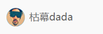

（2）css语法规范
规则构成
- 选择器
- 声明样式
有点意思
属性与属性值之间用 : 每组键值对 ; 分隔
代码风格样式规范
1.紧凑式
2.展开式
1.用展开式来写代码，用小写字母来写css代码
2.属性值前面，冒号后面，保留空格
3.选择器和大括号中间保留空格
（3）选择器
- 基础选择器--由单个选择器组成
- 3.1-标签选择器
- 3.2-类选择器
- 3.3-id选择器
- 3.4-通配符选择器
- 复合选择器
- 后代选择器
- 子代选择器
- 并集选择器
- 链接伪类选择器
- :focus 选择器
[3.1]类选择器
使用class来定义一个类
注意：
1.类选择器使用"."(英文点号)
2.可以理解给标签起了个名字，调用就是点名使用
3.如果名字比较长，可以用"-"来分隔，例如"class-one"
4.不要用纯数字，命名要有意义，尽量用英文
example:
- 冰雨
- 忆江南
我不是例子
注：详情使用方法看源码
类选择器口诀：样式点定义，结构类（class）调用 一个或多个 开发最常用
类名特殊使用-多类名:
一个标签可以设置多个类名，中间要加空格分隔
无论使用哪个名字都可以设置样式，样式是同时使用的。
使用场景:
可以同时设置重复的样式，通常会在开发中使用,方便后期修改代码。
[3.2]id选择器
简介：id选择器可以为标有特定id的html元素指定样式,用id属性开设置id选择器
,css 中id选择器以"#",来定义。
1--id不能象class一样重复命名，一个html中的id是惟一的
2--类选择器在修改样式中用的最多，id选择器一般用于页面唯一性的元素上，经常和js一起使用。
--id选择器--
id选择器口诀：样式#定义，结构id调用，只能调用一次，别人切勿使用。
源码展示
[3.3]通配符选择器
简介：使用"*" 使用，可以修改整个页面的所有属性。
语法：
- 通配符选择器不需要调用，自动给所有元素使用样式。
- 特殊情况下才会使用，后面讲解使用场景(一下是清除所有元素标签的内外边距)
[3.4]标签选择器
可以单独设置一类标签的格式。
语法：
[3.5]基础选择器总结
| 基础选择器 | 作用 | 特点 | 使用情况 | 用法 |
| 标签选择器 | 可以选出所有相同的标签，比如p | 不能差异化选择 | 较多 | p { color:red} |
| 类选择器 | 可以选出1个或多个标签 | 可以根据需求选择 | 非常的多 | .nav {color:red} |
| id选择器 | 可以选出 | 可以根据需求选择 | 非常的多 | .nav {color:red} |
| 通配符选择器 | 选则所有的标签 | 选择的太多，有部分不需要 | 非特殊情况使用 | * {color:red} |
[3.6]链接伪类选择器
- a:hover 选择所有未访问的链接
- a:visited 选择所有已被访问的链接
- a:link 选择鼠标指针位于其上的链接
- a:active 选择活动的链接（鼠标按下未弹起的链接）
注意事项:
- 为了确保生效，按照LVHA顺序声明:link - :visited - :hover - :active.
- 记忆法 love hate 或者lv宝宝hao
- 真正的开发中必须要按顺序使用伪类选择器
- 因为a链接自带样式，所以在使用中要单独指定样式
实际开发实际用法:
- 不是个链接伪类都要使用到
- 一般使用要先声明a的样式，后面紧接相应的伪类选择器样式
[3.7]:focus伪类选择器
:focus伪类选择器用于选取获得焦点的表单元素
焦点就是光标，一般情况 类表单元素才能获取，因此这个选择器也主要真对表单元素来说。
用于设置光标在使用表单时的样式变化
把获得光标大的input表单元素选取出来。
语法：
[3.8]进阶选择器总结
| 选择器 | 作用 | 特点 | 使用情况 | 隔开符号及用法 |
| 后代选择器 | 用来选择后代元素 | 可以是子孙后代 | 较多 | 符号是空格 .nav a |
| 子代选择器 | 选择最近一级元素 | 只选亲儿子 | 较少 | 符号是大于 .nav>p |
| 并集选择器 | 选择某些相通样式的元素 | 可以用于集体声明 | 较多 | 符号是逗号 .nav,header |
| 链接伪类选择器 | 选择不同状态的链接 | 跟链接相关 | 较多 | 重点记住a{}和 a:hover 实际开发的写法 |
| :focus伪类选择器 | 选择获得光标的表单 | 跟表单相关 | 较少 | input:focus 记住这个写方法 |
(5)css文本属性
一下属性可以设置文本的外观，比如文本颜色，对齐文本，装饰文本，，文本缩进，行间距等操作。
[5.1]大纲
- 文本颜色--color
- 对齐文本--text-align
- 装饰文本--text-decoration
[5.2]文本颜色
值：
- 预定义的颜色值，即颜色英文名
- 各种颜色的16进制[开发中最常用]
- RGB代码(rgb(255,0,0)或rgb(100%,0%,0%))
[5.3]对齐文本
text-align属性用于设置设置文本元素内文本内容的水平对齐方式。
值：
- left --文本左对齐（默认）
- right --右对齐
- cneter --居中对齐
[5.4]装饰文本
text-decoration属性规定添加到文本额修饰，可以给文本添加下划线，删除线，上划线等。
值：
- none -- 默认，没有装饰线(最常用)
- underline -- 下划线，链接自带(常用)
- overline -- 上划线，几乎不用
- line-through -- 删除线，(不常用)
源码：
用途有一个：可以去掉超链接自带的下划线
这是一个超链接[5.5]首行缩进
text-indent用来设置段落中的首行缩进
语法：text-indent: 2em/20px
值：
- 20px(可以设置成多少像素)
-
2em(也可以设置成相比第二行多少个字的距离)
em是一个相对单位，就是当前元素的(font-size)一个文字的大小，
通过使用 CSS 我们可以大大提升网页开发的工作效率！ 在我们的 CSS 教程中，您会学到如何使用 CSS 同时控制多重网页的样式和布局。
源码：
[5.6]设置行间距
语法：
line-height: 文字高度加上下间距
还可以设置段落之间的行高
即:p {
line-height: 26px;
}
(7)背景
[7.1]背景内容导航
| 属性 | 作用 | 值 |
| background-color | 背景颜色 | 16进制颜色/预定义的颜色值/RGB代码 |
| background-image | 背景图片 | url(图片路径) |
| background-repeat | 是否平铺重复 | repeat/no-repeat-x/repeat-y |
| background-position | 背景位置 | length/position 分别是x和y的坐标 |
| background-attachment | 背景附着方式 | scroll(背景随着滚动条滚动)/fixed(背景固定不动) |
| 背景简写 | 书写更简单 | 背景颜色 背景图片地址 背景平铺 背景滚动 背景位置 |
| 背景颜色半透明 | 半透明 | background:rgba(0,0,0,0.3); 必须有四个数字 |
[7.2]设置背景颜色
用途：用来设置背景的颜色，可以设置上到整个页面背景，下到一行文本的背景。
语法：
属性值：
- transparent 默认设置，透明的颜色
- 颜色的英文|16进制颜色|rgb值
[7.3]设置背景图片
语法：
注意:1.必须有url属性 2.可以用于一些小装饰，logo，大背景等地方。
[7.4]设置背景的平铺方式
简介：如果盒子比例过大，图片比例小，会默认重复显示x和y轴，
我们可以用平铺属性设置平铺方式或者不平铺。
属性值：
- repeat 默认值，垂直水平均重复
- repeat-x 只有水平位置会重复背景图像
- repeat-y 只有垂直位置会重复背景图像
- no-repeat background-image 不会重复
[7.5]设置背景的位置
简介：调整背景的位置。
语法：
值：
- 水平方向(x) :center top bottom
- 垂直方向(y) :center left right
注意：如果只设置一个值，那么另一个值默认center。
[7.5.1]设置精确的图片位置
可以设置成像素值，原点是左上角开始可以设置图片和盒子边界的距离，
也可以和center等值混合使用。
[7.6]设置背景附着
值：
- scroll(背景随着滚动条滚动)
- fixed(背景固定不动)
[7.7]设置背景半透明
语法：
语义化解析：
- rgb 为颜色的rgb值
- a 为透明的程度 范围：0~1 0为全透明 1为100%
注意：透明度只能更改背景颜色的透明度，不会更改盒子中的内容。
(8)页面布局
导读：页面布局三大核心，盒子模型，浮动，定位。每个页面是由很多个盒子组成的，盒子的位置可以由浮动进行粗略定位，用定位进行精确设置方位。
网页布局的过程：
- 先准备好相关的网页元素，网页元素基本都是盒子box。
- 利用css设置好盒子的样式。然后摆放到相应的位置。
- 往盒子里装内容。
[一]盒子模型
组成：
- 1.边框
- 2.外边距
- 3.内边距
- 4.内容
[8.1.1]盒子边框(border)
边框属性：
- border-width 定义边框的粗细，单位px。
- border-style 样式。
- border-color 颜色。
(A)粗细
单位用px，值越大越粗。
语法：
(B)边框样式
属性值：
我们只需要记住 solid(实线边框),dotted(点线边框),dashed(虚线边框) 这三个属性即可，其他的不常用。
语法：
(c)边框的颜色
颜色不用多说。
语法：

[8.2]圆角的边框(重要)
[8.2.1]基本的使用方法简介：
在css3中，新增了圆角边框样式，这样我们的盒子就可以变圆角了，甚至是圆形。
语法：
radius半径(圆的半径)原理:(椭)圆与边框交际形成圆角效果，半径越大，圆弧就越圆。实例：
[8.2.2]常用的几种使用方法(1)创建一个圆型
只要把半径设为盒子(必须是正方形盒子),将半径值设为高或宽的一半，这个盒子就会变成圆形
也可以设成百分比，直接设为 50% 效果相同，建议使用这个方法
源码：
(2)创建圆角矩形
方法：
- 生成一个长方形盒子
- 将半径值设为高的一半(不可用百分比)
(3)单独设置一个角的半径值
A.复合写法
- 设四个值： border-radius:10px 20px 5px 6px; 顺序分别是左上 右上 右下 左下
- 设两个值： 1.左上和右下 2.右上和左下
B.更精细的设置
- border-top-left-radius: ; 左上角
- border-top-right-radius: ; 右上角
- border-bottom-left-radius: 60px; 左下角
- border-bottom-right-radius: ; 右下角
可以单独设置某个角的圆弧
(8.3)阴影
导读：
在css3中，新增了盒子的圆角属性，与盒子的阴影, 可以多样化设计盒子的样式。这一节我们讲阴影的设计。
[8.3.A]盒子阴影
浏览：
具体用法可以自行在浏览器里调试
这里放一个类似小米官网方块的预设：
[8.3.B] 文字阴影
导读：可以为文字添加阴影，很少用了解即可
和上方使用方法一致
| h-shadow | 必须，水平阴影位置，允许负值 |
| v-shadow | 必须，垂直阴影位置，允许负值 |
| blur | 可选，模糊距离 |
| color | 可选模糊的颜色 |
(9)浮动(float)
导航：
- 9.1 为什么需要浮动?
- 9.2 什么是浮动?
- 9.3 浮动的特性1-脱标(重要)
- 9.3 浮动的特性2-浮动元素一行显示
- 9.5 浮动的特性3-浮动元素具有行内块元素的性质
- 9.6 浮动特性4-浮动元素经常和标准流父级搭配使用
- 9.7 浮动布局的两个注意点
- 9.8 清除浮动
[9.1]为什么需要浮动
有很多布局效果，标准流无法完成，利用浮动就可以完成布局，浮动可以改变元素标签排列方式。
浮动最典型的应用：可以让多个块级元素一行内排列显示。
网页布局第一准则：多个块级元素纵向排列找标准流，多个块级元素横向排列找浮动
[9.2]什么是浮动
float属性用于创建浮动框，将其移动到一遍，知道左边或右边缘触及包含块或另一个浮动框的边缘。
语法：
| 属性值 | 描述 |
| none | 元素不浮动(默认值) |
| left | 元素向右浮动 |
| right | 元素向右浮动 |
[9.5]浮动特性3-浮动元素具有行内块元素的性质
[9.7]浮动布局的两个注意点
1.浮动和标准流的父盒子搭配
先用标准流的父元素排列上下位置，之后内部子元素采取浮动排列到左右位置
2.一个元素浮动了，理论上其余的兄弟元素也跟着浮动
一个盒子里面有多个盒子，如果其中一个盒子浮动了，那么其他兄弟盒子也应该设置浮动，以防止引起问题
浮动的盒子只会影响浮动盒子后面的标准流不会影响前面的标准流
[9.8]清除浮动
为什么要清除浮动
- 父级没高度
- 子盒子浮动了
- 影响下面布局，我们就应该清除浮动
| 清除浮动的方式 | 优点 | 缺点 |
| 额外标签法 | 通俗易懂，书写方便 | 添加很多无意义标签，结构化较差 |
| 父级overflow:hidden | 书写简单 | 溢出隐藏 |
| 父级after伪元素 | 结构语义化正确 | 由于IE6-7不支持 :after,兼容性问题 |
| 父级双伪元素 | 结构语义化正确 | 由于IE6-7不支持 :after,兼容性问题 |
[9.8.1]为什么要清除浮动
由于很多时候父盒子不好设置高度，需要让父盒子自适应，有多少内容就适应多少高度，
如果设置为"auto"(自动适应),那么父盒子高(宽)会为"0"，会塌陷，影响下面的标准流盒子
实例应用清除浮动的本质
- 清除浮动的本质是清除浮动元素造成的影响
- 如果父盒子本身有高度，则不需要清除浮动
清除浮动后，父级就会根据浮动的子盒子自动检测高度。父级有了高度，就不会影响下面的标准流了
(10)定位(position)
[10.1]定位导读
/A/目标
- 能够说出为什么需要定位
- 定位的4个分类
- 四种定位的特点
- 为什么常用子绝父相布局
- 能够写出淘宝轮播图布局
- 能够说出显示隐藏的两种方式以及区别
/B/为什么需要定位
1.某个元素可以自由的在一个盒子内移动位置，并且压住其他盒子
例如淘宝网热卖标签，学成在线网的热门标签(他们都压住了底部的盒子，并且可以随意移动位置不会占用标准流的位置)
2.当我们滚动窗口时，盒子是固定在屏幕的某个位置的，不会随着滚动而移动。
例如小米官网的右侧服务栏，王者荣耀右侧二维码，和各种网站的回到顶部按钮
3.浮动可以让多个盒子无缝隙的挨在一起，定位可以让一个盒子固定在一个位置，并且压在另一个盒子的上面
[10.2]定位的组成
定位:将盒子定在某个位置，所以定位也是在摆放盒子，按照定位的方式偏移盒子
定位=定位模式+边偏移
定位模式用于指定一个元素在文档中的定位方式。边偏移决定了该元素最终的位置。
1. 定位模式
通过cssposition属性来设置，有四个值:
| 值 | 语义 |
| static | 静态定位 | relative | 相对定位 | absolute | 绝对定位 | fixed | 固定定位 |
2. 边偏移
边偏移就是定位的盒子移动到最终位置，有top bottom left right 四个属性
- top - top: 80px - 顶部偏移量，定义元素相对于父元素上方线的距离
- bottom - bottom: 80px - 底部偏移量，定义元素相对于父元素下方线的距离
- left - left: 80px - 左侧偏移量，定义元素相对于父元素左边线的距离
- right - right: 80px - 右侧偏移量，定义元素相对于父元素右边线的距离
[10.3]静态定位 static(了解即可)
静态定位是元素的默认定位方式，没有定位意思
语法：
静态定位按照标准流特性摆放位置，没有边偏移
静态定位在布局中很少用到
[10.4]相对定位 relative (重要)
相对定位元素的定位是相对其本身的坐标轴所偏移的定位。
移动相对定位元素，但它原本所占的空间不会改变。
人走了，魂还在 (原来的位置还占有，并不会被其他盒子所占有) 类似于灵魂出窍
通常搭配绝对定位使用(即父相子绝)
注:可以是负数
相对定位的特点(务必记住)
- 他是相对于自己原来的位置来移动的移动位置的时候参照点是自己原来的位置
- 原来在标准流的位置继续占有，后面的盒子依然以标准流的方式对待他(不脱标，继续保留原来的位置)
因此，相定并没有脱标。它最典型的应用是给绝对定位当爹的。。。
[10.5]绝对定位
绝对定位是根据他的祖先元素来移动位置的(拼爹)
语法：
选择器{position:absolute}
[A]没有父级或者父级没有定位的情况
1.如果没有祖先元素或者祖先元素没有定位，则以浏览器为准定位(Docment).
我找不到爹，只能跟着女娲走了
实例应用[B]父级盒子有定位的情况
2.如果祖先元素有定位(相对，绝对，固定)，则以最近一级的有定位的祖先元素为准进行定位
从离自己最近的元素开始找，谁有定位谁是我爹，我就跟谁走
实例应用3.绝对定位移动后不会占有原有的位置。(脱标)
在它之下的盒子会占用空出来的位置，大儿子走了二儿子占。
[B]定位的应用之一--子绝父相
问题
- 相对定位和绝对定位到底能用在哪呢?
- 为什么说相对定位给绝对定位当爹?
我们观察淘宝官网轮播图可以知道，左右两边有两个箭头，如果使用浮动去制作会很麻烦
这时候，使用子绝父相可以使用少量代码完成效果
效果思路
1.子绝父相即父盒子相对定位，子盒子使用绝对定位，因为绝对定位脱标，不会占用原空间
2.同理，下方小圆点也可以用绝对定位
应用实例[10.6]固定定位(fixed)
固定定位是元素规定于浏览器可视区的重要位置,主要使用场景:可以在浏览器页面滚动时元素的位置不会改变.
语法
固定定位的特点:
- 以浏览器的可视窗口为参照点移动元素。
跟父元素没有关系。 - 不随滚动条滚动
- 不占有原来的位置，和绝对定位相同
- 固定定位也是脱标的，其实规定定位可以看做一种特殊的绝对定位
作业：网页两侧固定的广告
右侧固定二维码
实例应用固定定位小技巧：回到顶部按钮
很多网站的返回顶部按钮都是粘着版心的，那么怎么去做这种效果呢
实例应用(11)显示和隐藏元素
[1]导读
类似网站的广告，当我们点击关闭就不见了，但是我们重新刷新页面，会重新出现
本质:让一个元素在页面中隐藏或者显示出来
[2]display显示隐藏元素
display属性用于设置一个元素应如何显示
- display:none ;隐藏对象。
- display:block ;除了转换为块级元素外，同时还有显示元素的意思。
display隐藏元素后，不再占有原来的位置。
后面应用及其广泛，搭配js可以做很多的网页特效
--实例--[3]visibility显示隐藏元素
visibility属性用于指定一个元素可见还是隐藏
- visibility: visible; 元素可见
- visibility: hidden; 元素隐藏
visibility隐藏元素后，继续占有原来的位置。
如果隐藏元素想要原来的位置，就用visibility: hidden;
如果隐藏元素不想要原来的位置，就用display:none;(用处更多 重点)
--实例--[4]overflow溢出显示隐藏元素
overflow属性指定了如果内容溢出一个元素的框(超过其指定高度及宽度)时，会发生什么。
- overflow:visible ; 不剪切内容也不添加滚动条
- overflow:hidden ; 不显示超过对象尺寸的内容，超出的部分隐藏掉
- overflow:scroll ; 不管超出内容与否，总是显示滚动条
- overflow:suto ; 超出自动显示滚动条，不超出不显示滚动条
一般情况下，我们都不想让溢出的内容显示出来，因为溢出的部分会影响布局。
但是如果有定位的盒子，谨慎使用overflow:hidden ; 因为它会隐藏多余的部分。
--实例--(2)字体图标
具体使用方法可参考此视频[1]字体图标的产生和优点
产生
字体图标使用场景：主要用于显示网页中通用，常用的一些小图标。
精灵图缺点很明显。这时有一种技术可以很好的解决问题，就是字体图标iconfont
字体图标可以为前端工程师提供一种方便高效的图标使用方式，展示的是图标,本质属于字体。
所以我们可以用字体的样式来设置图标(例如 font-size `color等);
优点
- 轻量级：一个字体图标要比一系列的图像要小。一旦字体加载了，图标马上渲染出来，减少了服务器请求。
- 灵活性：本质是文字，可以随时变换颜色，产生阴影，透明效果，旋转等
- 兼容性：几乎所有的浏览器都支持，可放心使用
注意：字体图标不能代替精灵技术，只是对工作中图标部分技术的提升和优化
总结
- 如果遇到一些结构和样式简单的小图标(搜索放大镜，我的收藏)，就用字体图标。

- 如果遇到一些样式复杂的小图片，就用精灵图
[2]字体图标的下载
视频教程推荐下载网站:
| 链接 | 备注 |
| icomoon字库 链接 | 国外服务器，打开网速慢 |
| 阿里巴巴矢量字体库 链接 | 阿里巴巴的图标库，免费，淘宝用的就是此图标库,此图标不可商用。 |
[3]字体图标的使用
icomoon字库使用方法 阿里巴巴字库使用方法阿里巴巴图标库方法：
如果之前添加的图标库不够用了，那么可以添加新的图标，然后替换原来的图标库。
icomoon字库方法：
GO(4)基本用户界面
导航:
[1]鼠标样式
设置或检索在对象上移动鼠标指针采用何种系统预定义的光标形状。
这里有五个常用样式的属性，写进css值里即可设置样式
| 属性值 | 描述 |
| default | 小白默认 |
| pointer | 小手 |
| move | 移动 |
| text | 文本 |
| not-allowed | 禁止 |
[2]取消表单轮廓和拖拽
我们先看两个案例
1.取消表单轮廓
表单1点击后会有个轮廓，表单2点击后没有
2.取消文本框拖拽
左边那个可以拖拽，会影响整体布局 | 右边那个不能拖拽
{A}取消表单轮廓
可以看看淘宝和京东的大搜索栏区域，input轮廓线都没有
如果有轮廓的话会影响美观，建议使用 outline:none; 删除轮廓
{B}取消文本框表单拖拽
像某些网页中的评论输入区，用的就是文本框，为了不影响布局，都会删除拖拽。
建议使用文本框时都取消拖拽，这会很影响网页整体布局！
readonly="readonly" 使用文本框时建议加上这个属性，使这个文本框不可以随意删除和改变
当然，文本框也有边框也可以通过 outline:none; 样式来删除轮廓，使整体更加美观
(5)vertical-align属性的应用
[1]基本使用方法
css的vertical-align属性应用场景:经常用于设置图片或者表单(行内块元素)，和文字垂直对齐。
效果如下：
只针对于行内元素或者行内块元素有效
| 值 | 描述 |
| baseline | 默认值，元素放置在父元素的基线上 |
| top | 把元素的的顶端与行中最高元素的顶端对齐 |
| middle | 把此元素放置在父元素的中部 |
| bottom | 把元素的顶端与行中最低的元素的顶端对齐 |
字符的基线，底线。
--实例--[2]属性的应用(消除图片对齐缝隙问题)
可以看到图片与边框是有缝隙的，因为浏览器默认对齐基线
解决方法：
1.给图片添加vertical-align:bottom|middle|top;等。提倡使用此方法。
2.把图片转换为块级元素display:block;。
缝隙就消失了：
(6)溢出的文字省略号显示
导读
在各种网页中，比如淘宝京东，商品名字可能会超过商品展示盒子的长度限制，会自动用省略号补全(...),本章我们学习如何制作此效果。
[1]单行文本溢出显示省略号--必须满足三个条件
将源码复制到需要省略的地方，例如p标签。
--实例--[2]多行文本溢出显示
多行文本溢出显示省略号，有较大的兼容问题，适合于webKit浏览器和移动端(移动端大部分是webKit内核的)
[了解即可！]
更推荐让后台人员来做这个效果，因为后台人员可以设置显示多少字，操作更简单。JavaScript也可以做出这个效果。
--实例--